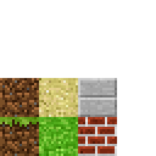

这一章我们先试玩一下minecraft克隆版，后面部分介绍一下几个知名人物。
- 安装pyglet软件包
- 选择Thonny IDE的菜单"Tools(工具)" --> "Manage Packages(管理软件包)"，在文本框中搜索pyglet
- 在Search Results(搜索结果)中点击pyglet链接安装，等待安装完成，关闭窗口
-
保存下面图片到桌面，文件名为texture
 -
拷贝下面代码到Thonny新建文件中，保存文件到桌面。点击运行就可以出现简易版的Minecraft了。游戏指令参见这里。
from __future__ import division
import sys
import math
import random
import time
from collections import deque
from pyglet import image
from pyglet.gl import *
from pyglet.graphics import TextureGroup
from pyglet.window import key, mouse
TICKS_PER_SEC = 60
# Size of sectors used to ease block loading.
SECTOR_SIZE = 16
WALKING_SPEED = 5
FLYING_SPEED = 15
GRAVITY = 20.0
MAX_JUMP_HEIGHT = 1.0 # About the height of a block.
# To derive the formula for calculating jump speed, first solve
# v_t = v_0 + a * t
# for the time at which you achieve maximum height, where a is the acceleration
# due to gravity and v_t = 0. This gives:
# t = - v_0 / a
# Use t and the desired MAX_JUMP_HEIGHT to solve for v_0 (jump speed) in
# s = s_0 + v_0 * t + (a * t^2) / 2
JUMP_SPEED = math.sqrt(2 * GRAVITY * MAX_JUMP_HEIGHT)
TERMINAL_VELOCITY = 50
PLAYER_HEIGHT = 2
if sys.version_info[0] >= 3:
xrange = range
def cube_vertices(x, y, z, n):
""" Return the vertices of the cube at position x, y, z with size 2*n.
"""
return [
x-n,y+n,z-n, x-n,y+n,z+n, x+n,y+n,z+n, x+n,y+n,z-n, # top
x-n,y-n,z-n, x+n,y-n,z-n, x+n,y-n,z+n, x-n,y-n,z+n, # bottom
x-n,y-n,z-n, x-n,y-n,z+n, x-n,y+n,z+n, x-n,y+n,z-n, # left
x+n,y-n,z+n, x+n,y-n,z-n, x+n,y+n,z-n, x+n,y+n,z+n, # right
x-n,y-n,z+n, x+n,y-n,z+n, x+n,y+n,z+n, x-n,y+n,z+n, # front
x+n,y-n,z-n, x-n,y-n,z-n, x-n,y+n,z-n, x+n,y+n,z-n, # back
]
def tex_coord(x, y, n=4):
""" Return the bounding vertices of the texture square.
"""
m = 1.0 / n
dx = x * m
dy = y * m
return dx, dy, dx + m, dy, dx + m, dy + m, dx, dy + m
def tex_coords(top, bottom, side):
""" Return a list of the texture squares for the top, bottom and side.
"""
top = tex_coord(*top)
bottom = tex_coord(*bottom)
side = tex_coord(*side)
result = []
result.extend(top)
result.extend(bottom)
result.extend(side * 4)
return result
TEXTURE_PATH = 'texture.png'
GRASS = tex_coords((1, 0), (0, 1), (0, 0))
SAND = tex_coords((1, 1), (1, 1), (1, 1))
BRICK = tex_coords((2, 0), (2, 0), (2, 0))
STONE = tex_coords((2, 1), (2, 1), (2, 1))
FACES = [
( 0, 1, 0),
( 0,-1, 0),
(-1, 0, 0),
( 1, 0, 0),
( 0, 0, 1),
( 0, 0,-1),
]
def normalize(position):
""" Accepts `position` of arbitrary precision and returns the block
containing that position.
Parameters
----------
position : tuple of len 3
Returns
-------
block_position : tuple of ints of len 3
"""
x, y, z = position
x, y, z = (int(round(x)), int(round(y)), int(round(z)))
return (x, y, z)
def sectorize(position):
""" Returns a tuple representing the sector for the given `position`.
Parameters
----------
position : tuple of len 3
Returns
-------
sector : tuple of len 3
"""
x, y, z = normalize(position)
x, y, z = x // SECTOR_SIZE, y // SECTOR_SIZE, z // SECTOR_SIZE
return (x, 0, z)
class Model(object):
def __init__(self):
# A Batch is a collection of vertex lists for batched rendering.
self.batch = pyglet.graphics.Batch()
# A TextureGroup manages an OpenGL texture.
self.group = TextureGroup(image.load(TEXTURE_PATH).get_texture())
# A mapping from position to the texture of the block at that position.
# This defines all the blocks that are currently in the world.
self.world = {}
# Same mapping as `world` but only contains blocks that are shown.
self.shown = {}
# Mapping from position to a pyglet `VertextList` for all shown blocks.
self._shown = {}
# Mapping from sector to a list of positions inside that sector.
self.sectors = {}
# Simple function queue implementation. The queue is populated with
# _show_block() and _hide_block() calls
self.queue = deque()
self._initialize()
def _initialize(self):
""" Initialize the world by placing all the blocks.
"""
n = 80 # 1/2 width and height of world
s = 1 # step size
y = 0 # initial y height
for x in xrange(-n, n + 1, s):
for z in xrange(-n, n + 1, s):
# create a layer stone an grass everywhere.
self.add_block((x, y - 2, z), GRASS, immediate=False)
self.add_block((x, y - 3, z), STONE, immediate=False)
if x in (-n, n) or z in (-n, n):
# create outer walls.
for dy in xrange(-2, 3):
self.add_block((x, y + dy, z), STONE, immediate=False)
# generate the hills randomly
o = n - 10
for _ in xrange(120):
a = random.randint(-o, o) # x position of the hill
b = random.randint(-o, o) # z position of the hill
c = -1 # base of the hill
h = random.randint(1, 6) # height of the hill
s = random.randint(4, 8) # 2 * s is the side length of the hill
d = 1 # how quickly to taper off the hills
t = random.choice([GRASS, SAND, BRICK])
for y in xrange(c, c + h):
for x in xrange(a - s, a + s + 1):
for z in xrange(b - s, b + s + 1):
if (x - a) ** 2 + (z - b) ** 2 > (s + 1) ** 2:
continue
if (x - 0) ** 2 + (z - 0) ** 2 < 5 ** 2:
continue
self.add_block((x, y, z), t, immediate=False)
s -= d # decrement side length so hills taper off
def hit_test(self, position, vector, max_distance=8):
""" Line of sight search from current position. If a block is
intersected it is returned, along with the block previously in the line
of sight. If no block is found, return None, None.
Parameters
----------
position : tuple of len 3
The (x, y, z) position to check visibility from.
vector : tuple of len 3
The line of sight vector.
max_distance : int
How many blocks away to search for a hit.
"""
m = 8
x, y, z = position
dx, dy, dz = vector
previous = None
for _ in xrange(max_distance * m):
key = normalize((x, y, z))
if key != previous and key in self.world:
return key, previous
previous = key
x, y, z = x + dx / m, y + dy / m, z + dz / m
return None, None
def exposed(self, position):
""" Returns False is given `position` is surrounded on all 6 sides by
blocks, True otherwise.
"""
x, y, z = position
for dx, dy, dz in FACES:
if (x + dx, y + dy, z + dz) not in self.world:
return True
return False
def add_block(self, position, texture, immediate=True):
""" Add a block with the given `texture` and `position` to the world.
Parameters
----------
position : tuple of len 3
The (x, y, z) position of the block to add.
texture : list of len 3
The coordinates of the texture squares. Use `tex_coords()` to
generate.
immediate : bool
Whether or not to draw the block immediately.
"""
if position in self.world:
self.remove_block(position, immediate)
self.world[position] = texture
self.sectors.setdefault(sectorize(position), []).append(position)
if immediate:
if self.exposed(position):
self.show_block(position)
self.check_neighbors(position)
def remove_block(self, position, immediate=True):
""" Remove the block at the given `position`.
Parameters
----------
position : tuple of len 3
The (x, y, z) position of the block to remove.
immediate : bool
Whether or not to immediately remove block from canvas.
"""
del self.world[position]
self.sectors[sectorize(position)].remove(position)
if immediate:
if position in self.shown:
self.hide_block(position)
self.check_neighbors(position)
def check_neighbors(self, position):
""" Check all blocks surrounding `position` and ensure their visual
state is current. This means hiding blocks that are not exposed and
ensuring that all exposed blocks are shown. Usually used after a block
is added or removed.
"""
x, y, z = position
for dx, dy, dz in FACES:
key = (x + dx, y + dy, z + dz)
if key not in self.world:
continue
if self.exposed(key):
if key not in self.shown:
self.show_block(key)
else:
if key in self.shown:
self.hide_block(key)
def show_block(self, position, immediate=True):
""" Show the block at the given `position`. This method assumes the
block has already been added with add_block()
Parameters
----------
position : tuple of len 3
The (x, y, z) position of the block to show.
immediate : bool
Whether or not to show the block immediately.
"""
texture = self.world[position]
self.shown[position] = texture
if immediate:
self._show_block(position, texture)
else:
self._enqueue(self._show_block, position, texture)
def _show_block(self, position, texture):
""" Private implementation of the `show_block()` method.
Parameters
----------
position : tuple of len 3
The (x, y, z) position of the block to show.
texture : list of len 3
The coordinates of the texture squares. Use `tex_coords()` to
generate.
"""
x, y, z = position
vertex_data = cube_vertices(x, y, z, 0.5)
texture_data = list(texture)
# create vertex list
# FIXME Maybe `add_indexed()` should be used instead
self._shown[position] = self.batch.add(24, GL_QUADS, self.group,
('v3f/static', vertex_data),
('t2f/static', texture_data))
def hide_block(self, position, immediate=True):
""" Hide the block at the given `position`. Hiding does not remove the
block from the world.
Parameters
----------
position : tuple of len 3
The (x, y, z) position of the block to hide.
immediate : bool
Whether or not to immediately remove the block from the canvas.
"""
self.shown.pop(position)
if immediate:
self._hide_block(position)
else:
self._enqueue(self._hide_block, position)
def _hide_block(self, position):
""" Private implementation of the 'hide_block()` method.
"""
self._shown.pop(position).delete()
def show_sector(self, sector):
""" Ensure all blocks in the given sector that should be shown are
drawn to the canvas.
"""
for position in self.sectors.get(sector, []):
if position not in self.shown and self.exposed(position):
self.show_block(position, False)
def hide_sector(self, sector):
""" Ensure all blocks in the given sector that should be hidden are
removed from the canvas.
"""
for position in self.sectors.get(sector, []):
if position in self.shown:
self.hide_block(position, False)
def change_sectors(self, before, after):
""" Move from sector `before` to sector `after`. A sector is a
contiguous x, y sub-region of world. Sectors are used to speed up
world rendering.
"""
before_set = set()
after_set = set()
pad = 4
for dx in xrange(-pad, pad + 1):
for dy in [0]: # xrange(-pad, pad + 1):
for dz in xrange(-pad, pad + 1):
if dx ** 2 + dy ** 2 + dz ** 2 > (pad + 1) ** 2:
continue
if before:
x, y, z = before
before_set.add((x + dx, y + dy, z + dz))
if after:
x, y, z = after
after_set.add((x + dx, y + dy, z + dz))
show = after_set - before_set
hide = before_set - after_set
for sector in show:
self.show_sector(sector)
for sector in hide:
self.hide_sector(sector)
def _enqueue(self, func, *args):
""" Add `func` to the internal queue.
"""
self.queue.append((func, args))
def _dequeue(self):
""" Pop the top function from the internal queue and call it.
"""
func, args = self.queue.popleft()
func(*args)
def process_queue(self):
""" Process the entire queue while taking periodic breaks. This allows
the game loop to run smoothly. The queue contains calls to
_show_block() and _hide_block() so this method should be called if
add_block() or remove_block() was called with immediate=False
"""
start = time.perf_counter()
while self.queue and time.perf_counter() - start < 1.0 / TICKS_PER_SEC:
self._dequeue()
def process_entire_queue(self):
""" Process the entire queue with no breaks.
"""
while self.queue:
self._dequeue()
class Window(pyglet.window.Window):
def __init__(self, *args, **kwargs):
super(Window, self).__init__(*args, **kwargs)
# Whether or not the window exclusively captures the mouse.
self.exclusive = False
# When flying gravity has no effect and speed is increased.
self.flying = False
# Strafing is moving lateral to the direction you are facing,
# e.g. moving to the left or right while continuing to face forward.
#
# First element is -1 when moving forward, 1 when moving back, and 0
# otherwise. The second element is -1 when moving left, 1 when moving
# right, and 0 otherwise.
self.strafe = [0, 0]
# Current (x, y, z) position in the world, specified with floats. Note
# that, perhaps unlike in math class, the y-axis is the vertical axis.
self.position = (0, 0, 0)
# First element is rotation of the player in the x-z plane (ground
# plane) measured from the z-axis down. The second is the rotation
# angle from the ground plane up. Rotation is in degrees.
#
# The vertical plane rotation ranges from -90 (looking straight down) to
# 90 (looking straight up). The horizontal rotation range is unbounded.
self.rotation = (0, 0)
# Which sector the player is currently in.
self.sector = None
# The crosshairs at the center of the screen.
self.reticle = None
# Velocity in the y (upward) direction.
self.dy = 0
# A list of blocks the player can place. Hit num keys to cycle.
self.inventory = [BRICK, GRASS, SAND]
# The current block the user can place. Hit num keys to cycle.
self.block = self.inventory[0]
# Convenience list of num keys.
self.num_keys = [
key._1, key._2, key._3, key._4, key._5,
key._6, key._7, key._8, key._9, key._0]
# Instance of the model that handles the world.
self.model = Model()
# The label that is displayed in the top left of the canvas.
self.label = pyglet.text.Label('', font_name='Arial', font_size=18,
x=10, y=self.height - 10, anchor_x='left', anchor_y='top',
color=(0, 0, 0, 255))
# This call schedules the `update()` method to be called
# TICKS_PER_SEC. This is the main game event loop.
pyglet.clock.schedule_interval(self.update, 1.0 / TICKS_PER_SEC)
def set_exclusive_mouse(self, exclusive):
""" If `exclusive` is True, the game will capture the mouse, if False
the game will ignore the mouse.
"""
super(Window, self).set_exclusive_mouse(exclusive)
self.exclusive = exclusive
def get_sight_vector(self):
""" Returns the current line of sight vector indicating the direction
the player is looking.
"""
x, y = self.rotation
# y ranges from -90 to 90, or -pi/2 to pi/2, so m ranges from 0 to 1 and
# is 1 when looking ahead parallel to the ground and 0 when looking
# straight up or down.
m = math.cos(math.radians(y))
# dy ranges from -1 to 1 and is -1 when looking straight down and 1 when
# looking straight up.
dy = math.sin(math.radians(y))
dx = math.cos(math.radians(x - 90)) * m
dz = math.sin(math.radians(x - 90)) * m
return (dx, dy, dz)
def get_motion_vector(self):
""" Returns the current motion vector indicating the velocity of the
player.
Returns
-------
vector : tuple of len 3
Tuple containing the velocity in x, y, and z respectively.
"""
if any(self.strafe):
x, y = self.rotation
strafe = math.degrees(math.atan2(*self.strafe))
y_angle = math.radians(y)
x_angle = math.radians(x + strafe)
if self.flying:
m = math.cos(y_angle)
dy = math.sin(y_angle)
if self.strafe[1]:
# Moving left or right.
dy = 0.0
m = 1
if self.strafe[0] > 0:
# Moving backwards.
dy *= -1
# When you are flying up or down, you have less left and right
# motion.
dx = math.cos(x_angle) * m
dz = math.sin(x_angle) * m
else:
dy = 0.0
dx = math.cos(x_angle)
dz = math.sin(x_angle)
else:
dy = 0.0
dx = 0.0
dz = 0.0
return (dx, dy, dz)
def update(self, dt):
""" This method is scheduled to be called repeatedly by the pyglet
clock.
Parameters
----------
dt : float
The change in time since the last call.
"""
self.model.process_queue()
sector = sectorize(self.position)
if sector != self.sector:
self.model.change_sectors(self.sector, sector)
if self.sector is None:
self.model.process_entire_queue()
self.sector = sector
m = 8
dt = min(dt, 0.2)
for _ in xrange(m):
self._update(dt / m)
def _update(self, dt):
""" Private implementation of the `update()` method. This is where most
of the motion logic lives, along with gravity and collision detection.
Parameters
----------
dt : float
The change in time since the last call.
"""
# walking
speed = FLYING_SPEED if self.flying else WALKING_SPEED
d = dt * speed # distance covered this tick.
dx, dy, dz = self.get_motion_vector()
# New position in space, before accounting for gravity.
dx, dy, dz = dx * d, dy * d, dz * d
# gravity
if not self.flying:
# Update your vertical speed: if you are falling, speed up until you
# hit terminal velocity; if you are jumping, slow down until you
# start falling.
self.dy -= dt * GRAVITY
self.dy = max(self.dy, -TERMINAL_VELOCITY)
dy += self.dy * dt
# collisions
x, y, z = self.position
x, y, z = self.collide((x + dx, y + dy, z + dz), PLAYER_HEIGHT)
self.position = (x, y, z)
def collide(self, position, height):
""" Checks to see if the player at the given `position` and `height`
is colliding with any blocks in the world.
Parameters
----------
position : tuple of len 3
The (x, y, z) position to check for collisions at.
height : int or float
The height of the player.
Returns
-------
position : tuple of len 3
The new position of the player taking into account collisions.
"""
# How much overlap with a dimension of a surrounding block you need to
# have to count as a collision. If 0, touching terrain at all counts as
# a collision. If .49, you sink into the ground, as if walking through
# tall grass. If >= .5, you'll fall through the ground.
pad = 0.25
p = list(position)
np = normalize(position)
for face in FACES: # check all surrounding blocks
for i in xrange(3): # check each dimension independently
if not face[i]:
continue
# How much overlap you have with this dimension.
d = (p[i] - np[i]) * face[i]
if d < pad:
continue
for dy in xrange(height): # check each height
op = list(np)
op[1] -= dy
op[i] += face[i]
if tuple(op) not in self.model.world:
continue
p[i] -= (d - pad) * face[i]
if face == (0, -1, 0) or face == (0, 1, 0):
# You are colliding with the ground or ceiling, so stop
# falling / rising.
self.dy = 0
break
return tuple(p)
def on_mouse_press(self, x, y, button, modifiers):
""" Called when a mouse button is pressed. See pyglet docs for button
amd modifier mappings.
Parameters
----------
x, y : int
The coordinates of the mouse click. Always center of the screen if
the mouse is captured.
button : int
Number representing mouse button that was clicked. 1 = left button,
4 = right button.
modifiers : int
Number representing any modifying keys that were pressed when the
mouse button was clicked.
"""
if self.exclusive:
vector = self.get_sight_vector()
block, previous = self.model.hit_test(self.position, vector)
if (button == mouse.RIGHT) or \
((button == mouse.LEFT) and (modifiers & key.MOD_CTRL)):
# ON OSX, control + left click = right click.
if previous:
self.model.add_block(previous, self.block)
elif button == pyglet.window.mouse.LEFT and block:
texture = self.model.world[block]
if texture != STONE:
self.model.remove_block(block)
else:
self.set_exclusive_mouse(True)
def on_mouse_motion(self, x, y, dx, dy):
""" Called when the player moves the mouse.
Parameters
----------
x, y : int
The coordinates of the mouse click. Always center of the screen if
the mouse is captured.
dx, dy : float
The movement of the mouse.
"""
if self.exclusive:
m = 0.15
x, y = self.rotation
x, y = x + dx * m, y + dy * m
y = max(-90, min(90, y))
self.rotation = (x, y)
def on_key_press(self, symbol, modifiers):
""" Called when the player presses a key. See pyglet docs for key
mappings.
Parameters
----------
symbol : int
Number representing the key that was pressed.
modifiers : int
Number representing any modifying keys that were pressed.
"""
if symbol == key.W:
self.strafe[0] -= 1
elif symbol == key.S:
self.strafe[0] += 1
elif symbol == key.A:
self.strafe[1] -= 1
elif symbol == key.D:
self.strafe[1] += 1
elif symbol == key.SPACE:
if self.dy == 0:
self.dy = JUMP_SPEED
elif symbol == key.ESCAPE:
self.set_exclusive_mouse(False)
elif symbol == key.TAB:
self.flying = not self.flying
elif symbol in self.num_keys:
index = (symbol - self.num_keys[0]) % len(self.inventory)
self.block = self.inventory[index]
def on_key_release(self, symbol, modifiers):
""" Called when the player releases a key. See pyglet docs for key
mappings.
Parameters
----------
symbol : int
Number representing the key that was pressed.
modifiers : int
Number representing any modifying keys that were pressed.
"""
if symbol == key.W:
self.strafe[0] += 1
elif symbol == key.S:
self.strafe[0] -= 1
elif symbol == key.A:
self.strafe[1] += 1
elif symbol == key.D:
self.strafe[1] -= 1
def on_resize(self, width, height):
""" Called when the window is resized to a new `width` and `height`.
"""
# label
self.label.y = height - 10
# reticle
if self.reticle:
self.reticle.delete()
x, y = self.width // 2, self.height // 2
n = 10
self.reticle = pyglet.graphics.vertex_list(4,
('v2i', (x - n, y, x + n, y, x, y - n, x, y + n))
)
def set_2d(self):
""" Configure OpenGL to draw in 2d.
"""
width, height = self.get_size()
glDisable(GL_DEPTH_TEST)
viewport = self.get_viewport_size()
glViewport(0, 0, max(1, viewport[0]), max(1, viewport[1]))
glMatrixMode(GL_PROJECTION)
glLoadIdentity()
glOrtho(0, max(1, width), 0, max(1, height), -1, 1)
glMatrixMode(GL_MODELVIEW)
glLoadIdentity()
def set_3d(self):
""" Configure OpenGL to draw in 3d.
"""
width, height = self.get_size()
glEnable(GL_DEPTH_TEST)
viewport = self.get_viewport_size()
glViewport(0, 0, max(1, viewport[0]), max(1, viewport[1]))
glMatrixMode(GL_PROJECTION)
glLoadIdentity()
gluPerspective(65.0, width / float(height), 0.1, 60.0)
glMatrixMode(GL_MODELVIEW)
glLoadIdentity()
x, y = self.rotation
glRotatef(x, 0, 1, 0)
glRotatef(-y, math.cos(math.radians(x)), 0, math.sin(math.radians(x)))
x, y, z = self.position
glTranslatef(-x, -y, -z)
def on_draw(self):
""" Called by pyglet to draw the canvas.
"""
self.clear()
self.set_3d()
glColor3d(1, 1, 1)
self.model.batch.draw()
self.draw_focused_block()
self.set_2d()
self.draw_label()
self.draw_reticle()
def draw_focused_block(self):
""" Draw black edges around the block that is currently under the
crosshairs.
"""
vector = self.get_sight_vector()
block = self.model.hit_test(self.position, vector)[0]
if block:
x, y, z = block
vertex_data = cube_vertices(x, y, z, 0.51)
glColor3d(0, 0, 0)
glPolygonMode(GL_FRONT_AND_BACK, GL_LINE)
pyglet.graphics.draw(24, GL_QUADS, ('v3f/static', vertex_data))
glPolygonMode(GL_FRONT_AND_BACK, GL_FILL)
def draw_label(self):
""" Draw the label in the top left of the screen.
"""
x, y, z = self.position
self.label.text = '%02d (%.2f, %.2f, %.2f) %d / %d' % (
pyglet.clock.get_fps(), x, y, z,
len(self.model._shown), len(self.model.world))
self.label.draw()
def draw_reticle(self):
""" Draw the crosshairs in the center of the screen.
"""
glColor3d(0, 0, 0)
self.reticle.draw(GL_LINES)
def setup_fog():
""" Configure the OpenGL fog properties.
"""
# Enable fog. Fog "blends a fog color with each rasterized pixel fragment's
# post-texturing color."
glEnable(GL_FOG)
# Set the fog color.
glFogfv(GL_FOG_COLOR, (GLfloat * 4)(0.5, 0.69, 1.0, 1))
# Say we have no preference between rendering speed and quality.
glHint(GL_FOG_HINT, GL_DONT_CARE)
# Specify the equation used to compute the blending factor.
glFogi(GL_FOG_MODE, GL_LINEAR)
# How close and far away fog starts and ends. The closer the start and end,
# the denser the fog in the fog range.
glFogf(GL_FOG_START, 20.0)
glFogf(GL_FOG_END, 60.0)
def setup():
""" Basic OpenGL configuration.
"""
# Set the color of "clear", i.e. the sky, in rgba.
glClearColor(0.5, 0.69, 1.0, 1)
# Enable culling (not rendering) of back-facing facets -- facets that aren't
# visible to you.
glEnable(GL_CULL_FACE)
# Set the texture minification/magnification function to GL_NEAREST (nearest
# in Manhattan distance) to the specified texture coordinates. GL_NEAREST
# "is generally faster than GL_LINEAR, but it can produce textured images
# with sharper edges because the transition between texture elements is not
# as smooth."
glTexParameteri(GL_TEXTURE_2D, GL_TEXTURE_MIN_FILTER, GL_NEAREST)
glTexParameteri(GL_TEXTURE_2D, GL_TEXTURE_MAG_FILTER, GL_NEAREST)
setup_fog()
def main():
window = Window(width=800, height=600, caption='Pyglet', resizable=True)
# Hide the mouse cursor and prevent the mouse from leaving the window.
window.set_exclusive_mouse(True)
setup()
pyglet.app.run()
if __name__ == '__main__':
main()
Minecraft的创造者Notch
微软公司的创办者比尔盖茨
John Carmack